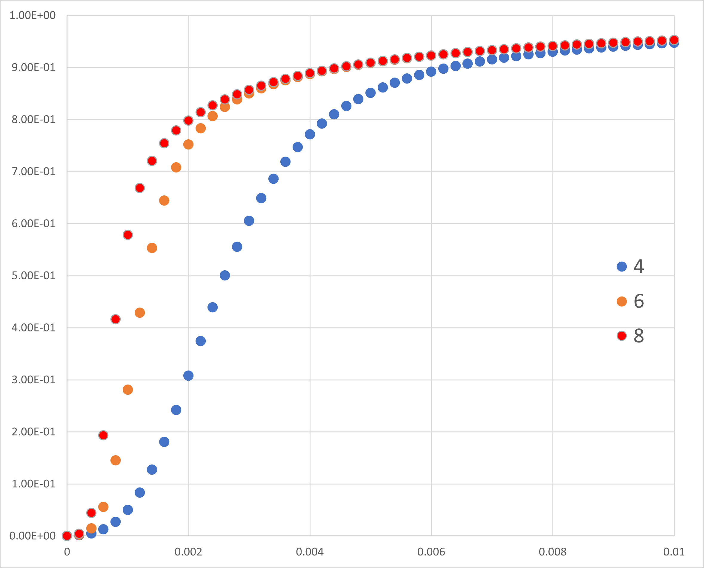

アロステリックモデル再考-03
つぎに，n，の場合の基質飽和度，Y，について考えていきましょう
n，の場合
n=2，の場合は，
\( \Large Y_{n=2} = \frac{ \frac{ S}{K_R} \left( 1 + \frac{S}{K_R} \right)}{ L + \left( 1 + \frac{ S}{K_R} \right)^2 } \)
n=3，の場合は，
\( \Large Y_{n=3} = \frac{ \frac{ S}{K_R} \left( 1 + \frac{S}{K_R} \right)^2}{ L + \left( 1 + \frac{ S}{K_R} \right)^3 } \)
と法則性が現れることがわかります，したがって，ｎ，の場合には，
\( \Large Y_{n} = \frac{ \frac{ S}{K_R} \left( 1 + \frac{S}{K_R} \right)^{n-1}}{ L + \left( 1 + \frac{ S}{K_R} \right)^n } \)
となることがわかります．
ｎによる飽和度の違い
\( \Large K_R = 2,000, L = 1,000 \)
として計算してみました．

このように，ｎが大きくなればなるほど，立ち上がりが急峻になっていくことがわかります．
次のページに，アロステリックモデルに関して，もう一度考えていきましょう．